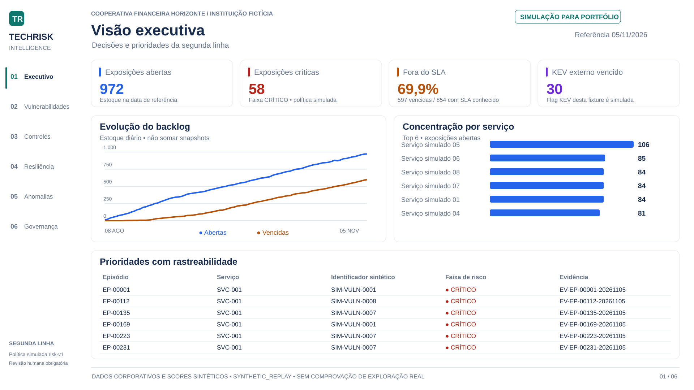

Dados sintéticos
Fixture reproduzível com inventário, episódios de exposição, controles, incidentes, continuidade e planos.
Fabric Data Engineering - TechRisk Intelligence POC é uma prova de conceito que transforma inventário, exposições, controles e testes de continuidade em um produto analítico para a segunda linha de defesa de uma instituição financeira fictícia.
O relatório conectado requer uma conta com permissão no Power BI. A prévia abaixo pode ser consultada sem login; nenhuma permissão do workspace foi alterada para este portfólio.
O produto reúne seis perspectivas: executivo, vulnerabilidades, controles, resiliência, anomalias e governança. Indicadores, tendências e tabelas com status apoiam a priorização e permitem voltar à evidência de cada episódio.

Referência dos números: snapshot de 05/11/2026, reconciliado entre o replay local e a publicação Gold. São resultados da simulação, não métricas de uma instituição real.
Fixture reproduzível com inventário, episódios de exposição, controles, incidentes, continuidade e planos.
JSON preservado por lote, manifesto, hash e identificação explícita da origem simulada.
Tipagem, chaves, integridade referencial e validação da cronologia antes do consumo.
Dimensões, fatos e snapshots diários. Publicação validada para consumo consistente dos indicadores.
Modelo semântico, medidas DAX e navegação entre risco, controles, resiliência e governança.
A Gold contém 47.398 exposições-dia na execução verificada. O estoque é analisado por snapshot; somar os dias transformaria backlog em uma métrica incorreta.
A política simulada combina severidade, probabilidade, flag KEV, criticidade do ativo e exposição. Faixas e exceções são explícitas; informação ausente não significa risco baixo.
O consumo usa a publicação marcada como validada. Medidas aplicam o identificador da publicação e a data de referência, evitando misturar cargas históricas.
Texto e cores sinalizam risco crítico, alto ou moderado; controle aprovado ou falho; continuidade dentro ou fora da meta; e planos no prazo ou vencidos.
O complemento analítico usa mediana e MAD com janela anterior de 28 dias e histórico mínimo. Sem cobertura de varredura, o alerta permanece uma indicação para investigar, sem atribuir causa.
O produto apoia supervisão e contestação. Aprovação de risco, aceite de evidência e encerramento de planos continuam dependendo de revisão humana.
A execução demonstrada é um SYNTHETIC_REPLAY. As fontes públicas NVD, CISA KEV e FIRST EPSS fazem parte da evolução da ingestão. Os identificadores SIM-VULN, scores e flags usados nesta carga não são registros públicos reais.
O case demonstra notebooks Medallion executados, modelo semântico e consumo no Power BI. Validação de RLS com identidade Viewer, execução encadeada do pipeline e atualização agendada ponta a ponta permanecem etapas de aceite. A POC não certifica conformidade regulatória nem comprova exploração de vulnerabilidades.